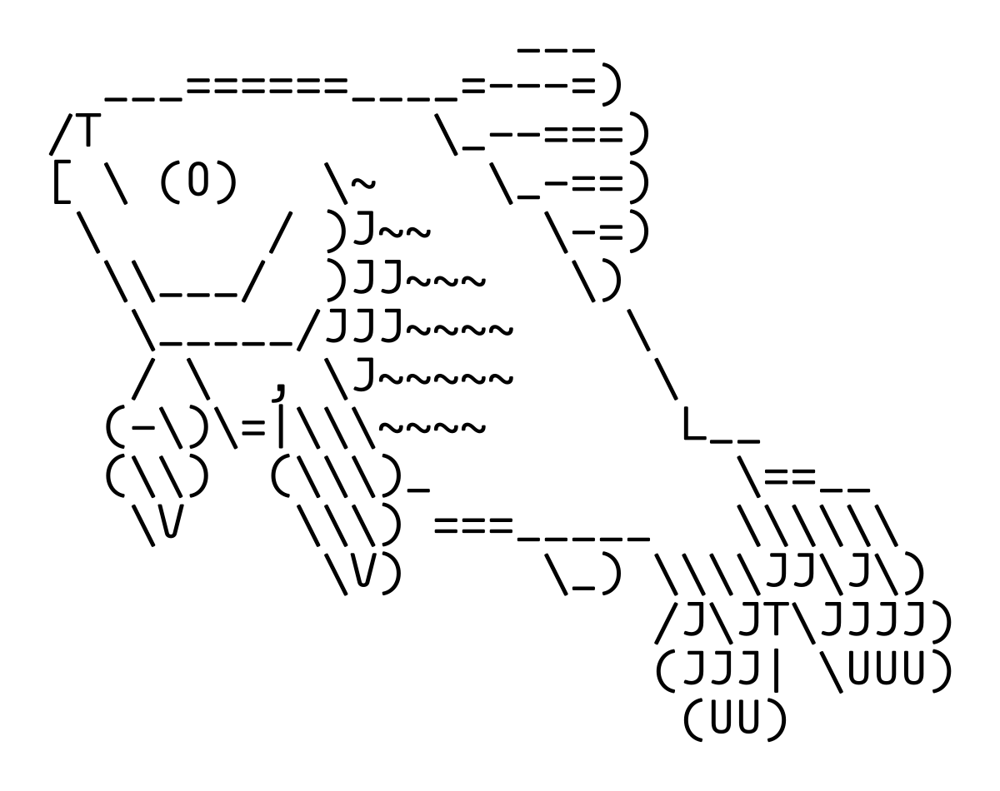

1.9 - פרויקט
פרק 13 – כלים לפרויקטים¶
זהו זה – מתחילים את העבודה האמיתית¶
עד עכשיו עברנו על כל מה שצריך לדעת מבחינה תיאורטית. כיסינו את שפת אסמבלי, את מבנה המחשב, את הinterrupts, את הזיכרון ואת הרגיסטרים. עכשיו הזמן להשתמש בזה- בפרויקט סיום.
פרויקט סיום זה לא עוד תרגיל. זו הזדמנות לכתוב תוכנה "אמיתית" שמשלבת בין כל מה שלמדתם לבין מה שמעניין אתכם. זו הדרך להוכיח שאתם שולטים בחומר- גם לעצמכם, גם לאחרים.
למה לא ניכנס לעומק?¶
הפרק הזה נותן לכם רק את הכלים הבסיסיים. לא נכנסים פה לעומק של כל נושא. למה? כי:
-
כל נושא כאן שווה פרק שלם בפני עצמו.
-
יותר חשוב – שתתרגלו ללמוד לבד. כך נראה העולם האמיתי.
בחירת פרויקט – אל תתקעו סתם¶
עדיף שתבחרו פרויקט לפני שאתם קוראים את ההסברים כאן. למה? כדי שתוכלו להתמקד רק במה שאתם באמת צריכים. חבל לבזבז זמן על דברים לא רלוונטיים. מצד שני – אם בא לכם ללמוד הכל – בכיף.
סוגי פרויקטים:¶
-
משחקים: סנייק, פונג, כל מה שבא. קל להתחיל, ההפעלה ברורה.
-
אפליקציות קטנות: קלידים שמנגנים, ציור עם העכבר – יצירתיות זה שם המשחק.
-
בעיות אלגוריתמיות: תיקון שגיאות, פתרון סודוקו. מאתגר יותר, דורש הבנה עצמית.
כלים שצריך להכיר¶
עבודה עם קבצים¶
פתיחת קובץ (ah=3Dh)¶
פותחים קובץ כדי שנוכל לקרוא או לכתוב אליו. (כמו בפייתון!)
מערכת ההפעלה DOS מאפשרת לנו באמצעות interrupts פשוטות להתעסק עם מערכת הקבצים כאשר נבצע int 21 (הinterrupt של dos)
כדי לפתוח קובץ, עלינו לדאוג שah יהיה שווה ל3D (בהקס) כאשר אנחנו קוראים לinterrupt.
בנוסף המשתמש שולח לinterrupt את שם הקובץ (במחרוזת שמסתיימת ב־0) ואת מצב הפתיחה:
AL=0קריאהAL=1כתיבהAL=2קריאה וכתיבה
בדומה לפייתון!
mov ah, 3Dh ; read interrupt
mov al, 0 ; read mode
lea dx, [filename] ; address of the filename string
int 21h
mov [filehandle], ax
כך ביצענו open מוצלח לקובץ שבחרנו עם מצב קריאה.
קיבלנו מהפונקציה file handler, באמצעתו נוכל לקרוא מהקובץ.
בדיוק כמו בטיפול שגיאות בפייתון, נוכל לבצע טיפול שגיאות באסמבלי- כאשר קורת שגיאה בinterrupts של ms-dos, דגל הcarry ידלק, ובאמצעתו נוכל לבצע טיפול בשגיאות.
נוכל להוסיף את שורת הקוד זו אחרי הקריאה לinterrupt, כך שאם קרתה שגיאה, נקפוץ לlabel עם הקוד לטיפול בשגיאה.
טיפול בשגיאה:
נדפיס למסך את הerror message באמצעות ah=9.
קריאה מקובץ (ah=3Fh)¶
mov ah, 3Fh
mov bx, [filehandle]
mov cx, 10 ; how many characters to read
mov dx, offset buffer ; where to read into
int 21h
בקריאה מוצלחת – AX מחזיק כמה תווים באמת נקראו.
כתיבה לקובץ (ah=40h)¶
שימו לב: כתיבה אפשרית רק אם פתחתם את הקובץ ב־
AL=1אוAL=2.
סגירת קובץ (ah=3Eh)¶
תמיד תסגרו קבצים בעצמכם. אל תסמכו על סיום התוכנית.
גרפיקה¶
גרפיקת טקסט¶
גרפיקת טקסט היא סוג של גרפיקה, שבאמצעותה אנחנו יכולים לצייר דברים על המסך אותיות ascii, הנה סוג של ascii art.

שיטה זו מאפשר לנו ליצור ציורים באמצעות תווים. כמו ציור הדג הזה למעלה, שנוצר כולו עם תווי ascii.
כדי לבצע גרפיקה מסוג זה, כל מה שנצטרך לעשות- זה לבצע פעולת הדפסה פשוטה, כמו שלמדנו.
כמובן ניתן להגדיר את הascii art כפשוט מחרוזת שנמצאת בdata segment,
הנה כלים אינטרנטים שמאפשרים לבצע ascii art פשוט.
- https://www.asciiart.eu/image-to-ascii מאפשר להמיר קובץ תמונה
- https://patorjk.com/software/taag/#p=display&f=Graffiti&t=Type%20Something%20 מאפשר להמיר טקסט
וכמובן, יש עוד המון כלים- מוזמנים לחפש בגוגל "ascii art generator"
גרפיקה¶
בBIOS מוגדרים כל הinterrupts שלנו, בניהם interrupt int 10.
נוכל להשתמש בinterrupt כדי ממש ליצור גרפיקה.
לפני שנתחיל הנה מידע בסיסי שעליכם לדעת:
- פיקסל, היא הקוביה הקטנה ביותר שאפשר לראות על מסך מחשב. כל פיקסל מציג צבע אחר, ועם אוסף כל הפיקסלים במסך יש תמונה.
- לכל פיקסל יש מספר X ומספר Y, שמייצג את המיקום שלו.
ציור פיקסל (ah=0Ch)¶
כך נוכל לכתוב צבע לפיקסל מסוים
כאשר al מכיל את מספר הצבע.
וcx מכיל את מספר הפיקסל על ציר הX
וdx מכיל את מספר הפיקסל על ציר הy.
קריאת צבע של פיקסל (ah=0Dh)¶
עם הקוד למטה נוכל לבדוק מה הצבע של פיקסל מסוים
מה זה "מספר צבע"?¶
במצב גרפי של 256 צבעים (שנקרא גם mode 13h), לכל פיקסל יש "מספר צבע" מספר בין 0 ל־255.
לכל "מספר צבע" יש צבע מוגדר בטבלת צבעים מיוחדת שנקראת Palette.
בpallet מוגדר למחשב כיצד להציג את הצבע המסוים שבחרנו.
למעשה, כל הצבעים בטבע אפשר ליצור עם הצבע אדום, ירוק, וכחול- וככה גם פועלים מסכי מחשב.
כל פיקסל במסך מחשב, יכול להציג את הצבע אדום ירוק וכחול בו-זמנית, באמצעות שילוב של שלושתם, אפשר ליצור כל צבע שקיים.
כל צבע בטבלת הpallet מוגדר ע"י שלושה ערכים:
- R (Red) – כמה אדום?
- G (Green) – כמה ירוק?
- B (Blue) – כמה כחול?
המשולש הזה נקרא RGB, ולפי השילוב של שלושתם - נקבע הצבע.
לדוגמה:
צבע מספר
0→ שחור (RGB = 0,0,0)צבע מספר
4→ אדום כהה (RGB = 170,0,0)צבע מספר
15→ לבן (RGB = 255,255,255)
חשוב: אנחנו לא מגדירים את ה־RGB בעצמנו כאן, אלא בוחרים מספר צבע, שמצביע על ערך קיים ב־Palette (ושם כתובים כל הסוגי צבעים לפי RGB)
אז מה באמת עושה הקוד הזה?¶
זה אומר:
-
קח את הצבע עם המספר
4, שעל פי הטבלת צבע הדיפולטית בBIOS, מספר צבע 4 הוא מצביע על הצבע 160,0,0- שהוא אדום כהה. -
וצייר אותו בפיקסל (160, 100)
אם תכתוב al = 2 במקום 4, תקבל ירוק כהה.
אם תכתוב al = 15, תקבל לבן.
כל המספרי צבע האלו מוגדרים בטבלת הpallet, ששם יש רשימה של מספרי RGB שונים.
איך משנים את הצבעים של המספרים?¶
אם תרצה, תוכל בעתיד להטעין טבלת צבעים מותאמת אישיתף, כלומר ממש טבלת pallet שונה. (נציג בהמשך כיצד לעשות זאת).
כך תוכל להחליט בעצמך מהו הצבע שמספר 4 מייצג: לא חייב להיות אדום – אתה מחליט.
אבל כל עוד לא שינית את הטבלה, כרטיס המסך משתמש ב־Standard VGA Palette - טבלת צבעים ברירת מחדל שמוגדרת בBIOS.
איך מציירים למסך דרך הזיכרון?¶
עד עכשיו השתמשנו בinterrupts (כמו int 10h) כדי לצייר פיקסלים למסך. אבל יש דרך הרבה יותר ישירה ומהירה - פשוט לכתוב ישירות לזיכרון הווידאו.
מה זה video memory?¶
כאשר אנחנו במצב גרפי (למשל, מצב 13h), יש אזור מיוחד בזיכרון - החל מהכתובת A000:0000 - שבו כל בית (byte) מייצג פיקסל אחד על המסך.
במצב 320x200, יש בדיוק 64,000 פיקסלים → ולכן צריך 64,000 בתים בזיכרון הזה.
כל בית = צבע של פיקסל אחד
כל ערך = מספר בין 0 ל־255 (שמתאים לצבע בטבלת הצבעים)
איך מחשבים את המיקום של פיקסל?¶
נניח שאנחנו רוצים לצייר נקודה ב־(X=100, Y=50).
המסך הוא מטריצה של 200 שורות, כל אחת באורך 320 עמודות.
הכתובת של פיקסל מחושב כך:
אז במקרה שלנו:
דוגמה – ציור נקודה ב־(100, 50)¶
mov ax, 13h
int 10h ; switch to graphics mode
mov ax, 0A000h
mov es, ax ; point to screen memory
mov di, 50
mov cx, 320
mul cx ; ax = 50 * 320 = 16000
add ax, 100 ; ax = 16100
mov di, ax ; di = position in screen memory
mov al, 4 ; red color
mov es:[di], al ; write the color directly to the screen
מה עשינו פה?¶
-
נכנסנו למצב גרפי
-
חישבנו את מיקום הפיקסל בזיכרון
-
כתבנו לשם את מספר הצבע
בלי int 10h, בלי ביוס – פשוט כתיבה ישירה לזיכרון המסך!
דוגמה – ציור קו אופקי באמצע המסך¶
mov ax, 13h
int 10h
mov ax, 0A000h
mov es, ax
mov cx, 320 ; length of the line
mov di, 100*320 ; row 100 = middle of the screen
NextPixel:
mov al, 3 ; yellow color
mov es:[di], al
inc di
loop NextPixel
זה מצייר קו מלא בשורה 100 - אמצע המסך.
-
הזיכרון הגרפי הוא כמו מערך של 64,000 תאים, שכל אחד מייצג פיקסל.
-
אפשר לכתוב אליו ישירות עם
es:[di]. -
טבלת הצבעים (Palette) קובעת איזה צבע באמת יוצג על המסך עבור כל מספר.
עבודה עם קבצי BMP¶
כדי לטעון גרפיקות למסך מוכנות מראש, נוכל ליצור קבצי "תמונה" ולטעון אותם לvideo memory שלנו באמצעות קבצי BMP.
קבצי BMP הם אחד הפורמטים הכי פשוטים לטעינת גרפיקות למסך. רק צריך להבין איך הקובץ בנוי ולהעתיק את הנתונים לזיכרון הווידאו.
מבנה קובץ BMP¶
קובץ bmp מכיל בדרך כלל תמונה עם 64,000 פיקסלים (קוביות), (320 עמודות ו200 שורות)
כאשר לכל פיקסל יש מספר צבע שמוגדר בטבלת pallet שנמצאת גם היא בקובץ.
| חלק בקובץ | גודל | תיאור |
|---|---|---|
| Header | 54 בייטים | מידע כללי (גודל, סוג, רוחב, גובה, התחלת תמונה וכו') |
| Palette | 1024 בייטים | טבלת צבעים: 256 צבעים * 4 בייטים |
| Bitmap Data | גודל משתנה (לרוב 64,000 בייט) | הפיקסלים של התמונה עצמה |
| ### שלבים לטעינת BMP |
1. הגדרת נתיבים ונתונים¶
הגדירו בdata segment
filename db 'image.bmp', 0
filehandle dw ?
Header db 54 dup (0)
Palette db 1024 dup (0)
LineBuffer db 320 dup (0) ; one row
2. מעבר למצב גרפי¶
זה מגדיר את המסך ל־320x200 פיקסלים, עם צבעים בין 0 ל־255, כל צבע הוא בית בודד.
3. פתיחת הקובץ¶
mov ah, 3Dh
xor al, al ; read only
mov dx, offset filename
int 21h
jc open_error
mov [filehandle], ax
4. קריאת ההדר¶
לא חייבים לפענח את ההדר, אבל זו דרך טובה לוודא שהקובץ באמת בפורמט BMP.
ה־2 הבייטים הראשונים צריכים להיות 'B' ו־'M'.
5. קריאת הפלטה (Palette)¶
6. העתקת הפלטה לזיכרון הווידאו¶
הפלטה שמורה בפורמט BGR0 (כחול, ירוק, אדום, ואחריו אפס), וצריך להעביר אותה ל־Ports 3C8h, 3C9h של כרטיס המסך:
mov si, offset Palette
mov cx, 256 ; 256 colors
mov dx, 3C8h
mov al, 0
out dx, al ; first color is 0
inc dx ; dx = 3C9h
PaletteLoop:
mov al, [si+2] ; red
shr al, 2 ; from 0-255 to 0-63
out dx, al
mov al, [si+1] ; green
shr al, 2
out dx, al
mov al, [si] ; blue
shr al, 2
out dx, al
add si, 4 ; next color
loop PaletteLoop
7. קריאת הפיקסלים והצגתם למסך¶
כאן קוראים שורה-שורה מהקובץ - מלמטה למעלה, ומעתיקים ל־A000:xxxx
mov ax, 0A000h
mov es, ax ; screen memory segment
mov cx, 200 ; 200 rows
LineLoop:
push cx
; compute offset: rows start from the bottom row, so the address is computed from the end
mov di, cx
shl cx, 6 ; cx * 64
shl di, 8 ; di * 256
add di, cx ; now di = y * 320
; read one row from the file
mov ah, 3Fh
mov bx, [filehandle]
mov cx, 320
mov dx, offset LineBuffer
int 21h
; copy the row to the screen
cld
mov si, offset LineBuffer
mov cx, 320
rep movsb ; copies from ds:si to es:di
pop cx
loop LineLoop
דגשים חשובים:¶
-
קובצי BMP נכתבים מלמטה למעלה – השורה הראשונה בקובץ היא התחתונה בתמונה.
-
הצבעים בפלטה הם BGR וצריך להפוך ל־RGB (לכן קוראים
[si+2],[si+1],[si]). -
המסך (במצב 13h) מיוצג בזיכרון החל מ־
A000:0000, כשכל שורה היא 320 בייטים.
🧪 דוגמה: הצגת קובץ logo.bmp¶
נניח שיש לנו קובץ בשם logo.bmp בגודל 320x200, במצב צבעים 256.
אפשר להציג אותו כך:
start:
mov ax, @data
mov ds, ax
mov ax, 13h
int 10h
call OpenFile
call ReadHeader
call ReadPalette
call CopyPaletteToVideo
call DisplayBMP
; wait for a keystroke
mov ah, 0
int 16h
; return to text mode
mov ax, 3
int 10h
mov ax, 4C00h
int 21h
(ומאחורי הקלעים – פשוט מחלקים את כל הקוד שהצגנו לפרוצדורות: OpenFile, ReadHeader, וכו')
רוצה לטעון BMP אחר?¶
תוכלו להוריד קבצי BMP שונים ולהציג אותם בתוכנה שלכם, תוכלו גם ליצור קבצי bmp משלכם באמצעות paint, לשמור כ־24-bit BMP בגודל 320x200, ואז להמיר אותה עם כלי אונליין ל־256 צבעים (8-bit color) אם צריך.
כלי עזר:¶
קלט מהמקלדת והעכבר¶
חלק א׳ - מקלדת¶
הנה 2 דרכים לקבל קלט מהמשתמש עם הBIOS
1. קלט חוסם (מחכה למקש) – int 16h / ah=0¶
שיטה זו עוצרת את הריצה של התוכנה ומחכה שהמשתמש יקליד מקש על המקלדת.
wait_key_bios:
mov ah, 0 ; service 0 = wait for a key
int 16h ; AL <- ASCII (or 0 for extended keys)
; AH ← Scan Code
cmp al, 27 ; Esc?
jne wait_key_bios
; if you exited the loop - Esc was pressed
בקוד למעלה אנחנו משתמשים בinterrupt כדי לבדוק אם המשתמש לחץ על המקש esc.
- הפונקציה חוסמת; התוכנית לא ממשיכה עד שיש קלט.
2. קלט לא‑חוסם – int 16h / ah=1¶
שיטה זו לא חוסמת את המשתמש, לא עוצרת את הקוד לרוץ כל עוד המשתמש לא לחץ על המקלדת.
מתי? במשחק או בזמן אנימציה, כשהלוגיקה צריכה להתעדכן גם בלי מקש.
poll_key_bios:
mov ah, 1
int 16h
jz NoKey ; Zero-flag=1 -> no key
; Zero-flag=0 -> there is a key, ASCII in AL, Scan Code in AH
cmp ah, 48h ; ↑ (Scan Code 48h)
je UpPressed
NoKey:
; continue logic (update graphics, bots, etc.)
jmp poll_key_bios
ניקוי באפר המקלדת (לפני “Press any key to continue”)¶
flush_keyboard:
mov ah, 1
int 16h
jz done_flush
; there is a pending character - read it to discard it
mov ah, 0
int 16h
jmp flush_keyboard
done_flush:
דוגמה מלאה – “בקר” להזזת ריבוע עם החיצים¶
org 100h
.model small
.stack 100h
.data
x dw 160 ; center of the screen
y dw 100
.code
start:
mov ax, 13h
int 10h
mainloop:
; draw a small 4x4 square
call draw_player
; non-blocking input
mov ah, 1
int 16h
jz skip_keys
mov ah, 0
int 16h ; now AL/AH hold the full character
cmp ah, 48h ; Up
jne chk_down
sub y, 2
jmp skip_keys
chk_down:
cmp ah, 50h ; Down
jne chk_left
add y, 2
jmp skip_keys
chk_left:
cmp ah, 4Bh ; Left
jne chk_right
sub x, 2
jmp skip_keys
chk_right:
cmp ah, 4Dh ; Right
jne chk_esc
add x, 2
jmp skip_keys
chk_esc:
cmp ah, 01h ; Esc
je exit_prog
skip_keys:
; erase the remainder of the previous square (just paint it black)
call clear_player
jmp mainloop
draw_player proc
push ax bx cx dx es di
mov ax, 0A000h
mov es, ax
mov bx, [y]
mov dx, bx
shl bx, 6
shl dx, 8
add bx, dx ; BX = y*320
add bx, [x] ; offset to the top-left corner
mov di, bx
mov cx, 4 ; 4 rows
next_row:
mov al, 12 ; light red
stosb
stosb
stosb
stosb
add di, 320-4
loop next_row
pop di es dx cx bx ax
ret
draw_player endp
clear_player proc
push ax bx cx dx es di
mov ax, 0A000h
mov es, ax
mov bx, [y]
mov dx, bx
shl bx, 6
shl dx, 8
add bx, dx
add bx, [x]
mov di, bx
mov cx, 4
next_row2:
mov al, 0 ; color 0 = black
stosb
stosb
stosb
stosb
add di, 320-4
loop next_row2
pop di es dx cx bx ax
ret
clear_player endp
exit_prog:
mov ax, 3
int 10h
mov ax, 4C00h
int 21h
end start
חלק ב׳ - עכבר (Interrupt 33h)¶
1. אתחול בסיסי¶
2. הצגת / הסתרת הסמן¶
3. קריאת מיקום ולחיצות¶
mov ax, 3
int 33h
; after the call:
; BX = button state (bit0=left, bit1=right)
; CX = X (0-319 in mode 13h)
; DX = Y (0‑199)
4. קביעת גבולות־תנועה (שימושי במשחק/עורך)¶
; Y‑min=0, Y‑max=199
mov ax, 7
mov cx, 0
mov dx, 199
int 33h
; X‑min=0, X‑max=319
mov ax, 8
mov cx, 0
mov dx, 319
int 33h
5. ציור נקודה איפה שהעכבר לוחץ¶
org 100h
.model small
.stack 100h
.code
start:
mov ax, 13h
int 10h
; init mouse
mov ax, 0
int 33h
or ax, ax
jz no_mouse
mov ax, 1
int 33h ; Show cursor
main_lp:
mov ax, 3
int 33h ; BX, CX, DX <- state
test bx, 1 ; left button?
jz main_lp
; draw a blue pixel
push ax bx cx dx es di
mov ax, 0A000h
mov es, ax
; DI = Y*320 + X
mov ax, dx
shl ax, 6
shl dx, 8
add ax, dx
add ax, cx
mov di, ax
mov al, 1 ; color 1 = blue
mov es:[di], al
pop di es dx cx bx ax
jmp main_lp
no_mouse:
mov ax, 3
int 10h
mov dx, offset msg
mov ah, 9
int 21h
mov ax, 4C00h
int 21h
msg db 'Mouse driver not found',13,10,'$'
end start
6. אירועים (“callback”) בזמן אמת¶
ה‑BIOS‑Mouse יכול לשלוח “אירוע” למשק־תוכנה שלך (רק במערכות אמיתיות DOS; בדוסבוקס עובד).
הגדרה: AX=0Ch, CX=סוג‑אירוע, DX=כתובת פורמולת־שירות.
-
CX=0001h– תנועה -
CX=0002h– כפתור נלחץ -
CX=0004h– כפתור שוחרר
דוגמה קצרצרה: שומר ב‑CS:IP שלך כתובת, וה‑BIOS יקפוץ לשם בכל דחיפת עכבר.